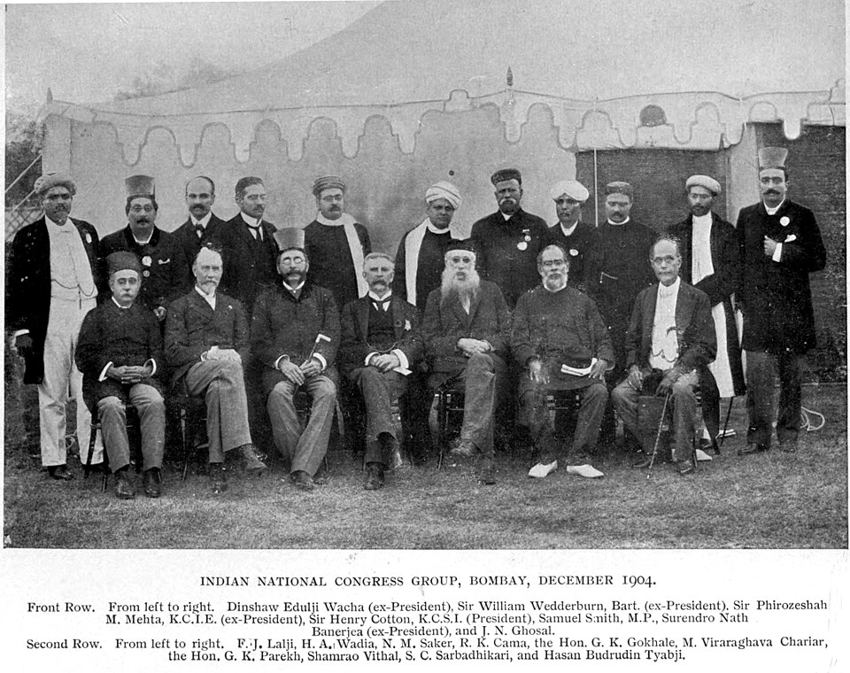

अंतरराष्ट्रीय
अंतरराष्ट्रीयव्लादिमीर पुतिन ने की भारत की प्राचीन सभ्यता और भाषाई विविधता की प्रशंसा
रूसी राष्ट्रपति व्लादिमीर पुतिन ने भारत की प्राचीन सभ्यता और भाषाई विविधता की सराहना की है। पीएम मोदी के साथ हुई बातचीत में रक्षा, ऊर्जा और व्यापार समेत विभिन्न मुद्दों पर चर्चा हुई।
ताज़ा ख़बरें
गोंडा में चरित्र शक के चलते पत्नी की कुल्हाड़ी से हत्या, आरोपी पति गिरफ्तार
उत्तर प्रदेश के गोंडा में चरित्र पर शक के चलते एक व्यक्ति ने अपनी पत्नी की कुल्हाड़ी से वार कर हत्या कर दी। बेटे की सूचना पर पुलिस ने आरोपी को गिरफ्तार कर लिया है।
टेकएनविया विवाद: एलिस हुआंग के हटने के बाद सिंगापुर में मेगास्पीड का कामकाज ठप
एनविया से जुड़े विवाद के केंद्र में रहीं एलिस हुआंग के बाहर होने के बाद सिंगापुर स्थित कंपनी मेगास्पीड का कामकाज बंद हो गया है। हालांकि, इससे जुड़ी टीम अब 'नोवागेट क्लाउड' के नाम से नया वेंचर चला रही है।
राष्ट्रीयतमिलनाडु और केरल में भारी बारिश का अनुमान, उत्तर भारत में कोहरे की चेतावनी
मौसम विभाग ने तमिलनाडु और केरल में भारी बारिश का अनुमान जताया है। इसके साथ ही उत्तर भारत के कई राज्यों में घने कोहरे और पूर्वोत्तर में बारिश की चेतावनी जारी की गई है।
 व्यापार
व्यापारपीएम मोदी की अपील और सोने के दाम: क्या कीमतों में गिरावट की वजह सोना खरीदना कम करना है
प्रधानमंत्री नरेंद्र मोदी के सोना न खरीदने की अपील के दावों और सोने की कीमतों में आई भारी गिरावट के बीच आर्थिक विशेषज्ञों ने इसके पीछे अंतरराष्ट्रीय कारणों को मुख्य वजह बताया है।
राष्ट्रीयपूर्व क्रिकेटर सुरेश रैना का दिल्ली स्थित आलीशान घर, देखें तस्वीरें
पूर्व भारतीय क्रिकेटर सुरेश रैना ने अपने दिल्ली स्थित वसंत कुंज बंगले का टूर कराया है। घर के एक हिस्से में उनके क्रिकेट करियर और 2011 विश्व कप जीत की यादें सजी हुई हैं।
खेलपूर्व क्रिकेटर सुरेश रैना ने कराया दिल्ली आवास का टूर, घर में सजी हैं खेल की यादें
पूर्व भारतीय क्रिकेटर सुरेश रैना ने अपने दिल्ली स्थित आवास का वीडियो टूर कराया है। वसंत कुंज स्थित इस घर में क्रिकेट करियर की यादें और एक आधुनिक रसोईघर के साथ टेरेस पर मिनी गार्डन भी है।
 अंतरराष्ट्रीय
अंतरराष्ट्रीयनेपाल के प्रधानमंत्री बालेन शाह आधिकारिक यात्रा पर नई दिल्ली पहुंचे
नेपाल के प्रधानमंत्री बालेन शाह नई दिल्ली पहुंच गए हैं। अपनी इस यात्रा के दौरान दोनों देशों के बीच द्विपक्षीय आर्थिक संबंधों और व्यापार को मजबूत करने पर चर्चा होगी।
राष्ट्रीयउत्तर प्रदेश टीजीटी भर्ती के आवेदन की अंतिम तारीख बढ़कर 28 नवंबर हुई
उत्तर प्रदेश शिक्षा सेवा चयन आयोग ने 17,735 टीजीटी पदों के लिए आवेदन की अंतिम तारीख 28 नवंबर 2026 तक बढ़ा दी है। हाईकोर्ट के आदेश के बाद यह फैसला लिया गया है।
राष्ट्रीयअजय देवगन की थ्रिलर फिल्म 'दृश्यम: द कंक्लूजन' ओटीटी पर रिलीज के लिए तैयार
सिनेमाघरों में सफल प्रदर्शन के बाद अजय देवगन की फिल्म 'दृश्यम: द कंक्लूजन' इस हफ्ते ओटीटी पर स्ट्रीम होने जा रही है। दर्शक इसे घर बैठे ऑनलाइन देख सकेंगे।
 राष्ट्रीय
राष्ट्रीयबिहार में नीतीश सेतु के उद्घाटन के बाद पोस्टर फाड़े जाने पर राजनीतिक विवाद
बिहार में नीतीश सेतु के उद्घाटन के बाद प्रचार सामग्री फाड़े जाने का वीडियो सामने आने के बाद जेडीयू, बीजेपी और आरजेडी के बीच सियासी टकराव शुरू हो गया है।
 राष्ट्रीय
राष्ट्रीयराहुल गांधी ने एलीफेंटा गुफाओं की अर्धनारीश्वर मूर्ति शेयर कर भाजपा पर साधा निशाना
कांग्रेस नेता राहुल गांधी ने 1500 साल पुरानी अर्धनारीश्वर मूर्ति की तस्वीर शेयर करते हुए भाजपा और आरएसएस पर भारतीय परंपराओं को न समझने का आरोप लगाया है।
 राष्ट्रीय
राष्ट्रीयराहुल गांधी ने BJP-RSS पर साधा निशाना, असम के मुख्यमंत्री हिमंत सरमा ने किया पलटवार
कांग्रेस नेता राहुल गांधी ने BJP और RSS पर भारतीय संस्कृति को न समझने का आरोप लगाया। इसके जवाब में असम के मुख्यमंत्री हिमंत बिस्व सरमा ने इसे अहंकार करार दिया है।
अंतरराष्ट्रीयनेपाल के प्रधानमंत्री बालेन्द्र शाह अपनी पहली विदेश यात्रा पर दिल्ली पहुंचे
नेपाल के प्रधानमंत्री बालेन्द्र शाह दो दिवसीय राजकीय यात्रा पर रविवार को नई दिल्ली पहुंचे। मार्च 2026 में पदभार संभालने के बाद यह उनका पहला विदेशी दौरा है, जिसके तहत वे प्रधानमंत्री नरेंद्र मोदी से द्विपक्षीय बातचीत करेंगे।
अंतरराष्ट्रीयनेपाल के प्रधानमंत्री बालेन्द्र शाह दो दिवसीय राजकीय यात्रा पर नई दिल्ली पहुंचे
नेपाल के प्रधानमंत्री बालेन्द्र शाह अपनी पहली द्विपक्षीय विदेश यात्रा पर रविवार को नई दिल्ली पहुंचे। इस दौरान व्यापार, ऊर्जा और कनेक्टिविटी पर चर्चा होगी।
राष्ट्रीयतेलंगाना कांग्रेस में कलह तेज, सीएम रेवंत रेड्डी के बयान पर पार्टी विधायक की आपत्ति
तेलंगाना के मुख्यमंत्री रेवंत रेड्डी के 'पागल कुत्ते' वाले विवादित बयान पर पार्टी के भीतर ही घमासान मच गया है। कांग्रेस विधायक कोमातीरेड्डी राज गोपाल रेड्डी ने इस टिप्पणी पर कड़ी आपत्ति जताई है।
राष्ट्रीयअखिलेश यादव ने पिता मुलायम सिंह यादव को उनकी जयंती पर किया याद
समाजवादी पार्टी के राष्ट्रीय अध्यक्ष अखिलेश यादव ने अपने पिता और पार्टी संस्थापक मुलायम सिंह यादव की जयंती पर उन्हें श्रद्धांजलि दी और उनके बताए मूल्यों को याद किया।
 राष्ट्रीय
राष्ट्रीयतिरुपति बालाजी मंदिर में साल में सिर्फ एक बार क्यों निकलती है उग्र श्रीनिवास की सवारी?
आंध्र प्रदेश के तिरुमाला स्थित तिरुपति बालाजी मंदिर में भगवान उग्र श्रीनिवास की शोभायात्रा साल में केवल एक बार कैशिका द्वादशी के दिन सूर्योदय से पहले निकाली जाती है, जिसके पीछे सदियों पुरानी पौराणिक मान्यता जुड़ी है.
अंतरराष्ट्रीयवेल्स की राजकुमारी कैथरीन ने बीबीसी डॉक्यूमेंट्री में कैंसर से अपने संघर्ष को साझा किया
वेल्स की राजकुमारी कैथरीन ने बीबीसी की आगामी डॉक्यूमेंट्री 'हील' में कैंसर के अपने अनुभव और इस बीमारी से जीवन में आए बदलावों के बारे में खुलकर बात की है।
अंतरराष्ट्रीयएसएस राजामौली की फिल्म 'वाराणसी' 18 फॉर्मेट में होगी रिलीज
एसएस राजामौली की आगामी फिल्म 'वाराणसी' दुनिया भर में 18 अलग-अलग फॉर्मेट में रिलीज होगी। यह फिल्म IMAX 1.43:1 आस्पेक्ट रेशियो में आने वाली पहली गैर-अंग्रेजी फिल्म बताई जा रही है।
अंतरराष्ट्रीयइटली में सोनिया गांधी का पुश्तैनी घर म्यूजियम में बदला, गांधी परिवार को मिला न्योता
इटली में सोनिया गांधी के पुश्तैनी घर को एक म्यूजियम के रूप में विकसित किया गया है। घर के मौजूदा मालिक ने गांधी परिवार को इसे देखने के लिए आमंत्रित किया है।
 व्यापार
व्यापारअयोध्या की जमीन या सोना, पांच साल में किस निवेश ने दिया ज्यादा रिटर्न
अयोध्या में जमीन और सोने में निवेश के पांच साल के रिटर्न की तुलना सामने आई है। जानिए पांच लाख रुपये लगाने पर निवेशकों को किस विकल्प में ज्यादा फायदा मिला है।
राष्ट्रीयधनुष और दुलकर सलमान की फिल्मों का बॉक्स ऑफिस पर मुकाबला
सिनेमाघरों में रिलीज हुई धनुष की 'OM: ऑपरेशन मोल' और दुलकर सलमान की 'आकाशमलो ओका तारा' का बॉक्स ऑफिस पर संघर्ष जारी है, जिसमें पहले वीकेंड के दौरान धनुष की फिल्म ने बढ़त बनाई है।
राष्ट्रीयअमित शाह बोले- चीन सीमा से लगे 40 गांवों में बढ़ी आबादी, पलायन थमा
केंद्रीय गृह मंत्री अमित शाह ने कहा कि केंद्र सरकार की नीतियों और सुविधाओं के चलते चीन सीमा से लगे अरुणाचल प्रदेश के 40 गांवों में पलायन रुका है और आबादी बढ़ी है।
राष्ट्रीयउत्तर प्रदेश विधानसभा चुनाव: सपा और कांग्रेस के बीच सीट शेयरिंग पर दिल्ली में बैठक
उत्तर प्रदेश विधानसभा चुनाव से पहले समाजवादी पार्टी और कांग्रेस के बीच सीट शेयरिंग को लेकर दिल्ली में तीन दिवसीय बैठक शुरू होने जा रही है। बैठक में उम्मीदवारों के चयन का मुख्य आधार विनेबिलिटी होगा।
राष्ट्रीयदिल्ली से अगवा आठ महीने का बच्चा उत्तर प्रदेश से बरामद, दंपती समेत तीन गिरफ्तार
दिल्ली के पांडव नगर से शनिवार को अगवा किए गए आठ महीने के बच्चे को पुलिस ने उत्तर प्रदेश के अलीगढ़ से सकुशल बरामद कर लिया है। पुलिस ने एक दंपती समेत तीन आरोपियों को गिरफ्तार किया है।
राष्ट्रीयकार्तिक आर्यन ने अपने 35वें जन्मदिन पर की प्रोडक्शन हाउस की शुरुआत
अभिनेता कार्तिक आर्यन ने अपने 35वें जन्मदिन पर नए प्रोडक्शन हाउस डोपामाइन स्टूडियोज का ऐलान किया। साथ ही उन्होंने करण जौहर के साथ अपनी पहली मॉन्स्टर थ्रिलर फिल्म 'कालिया' की घोषणा की है।
 व्यापार
व्यापारदस साल में पहली बार घटे घरेलू एलपीजी कनेक्शन, उज्जवला योजना के लाभार्थी भी शामिल
चालू वित्त वर्ष में देश भर में करीब 75 लाख घरेलू एलपीजी गैस कनेक्शन कम हुए हैं। एक दशक में यह पहला मौका है जब ग्राहकों की संख्या में इतनी बड़ी गिरावट दर्ज की गई है।
 राष्ट्रीय
राष्ट्रीयऔराया जिला: भौगोलिक स्थिति, औद्योगिक पहचान और राजनीतिक समीकरण की पूरी कहानी
उत्तर प्रदेश का औरैया जिला अपनी धार्मिक विरासत, कृषि और औद्योगिक प्रतिष्ठानों के साथ खास राजनीतिक समीकरण के लिए जाना जाता है। जिले की तीन विधानसभा सीटों में सपा और भाजपा का कब्जा है।
 खेल
खेलभारतीय मूल के निखिल चौधरी के शानदार प्रदर्शन से ऑस्ट्रेलिया ने इंग्लैंड को हराया
मेलबर्न में खेले गए पहले टी20 मैच में भारतीय मूल के निखिल चौधरी के ऑलराउंड प्रदर्शन के दम पर ऑस्ट्रेलिया ने इंग्लैंड को रोमांचक मात दी.
राष्ट्रीयअशोकनगर में पुलिस की छापेमारी, 60 टंकियों में कच्ची शराब और लाहन जब्त
मध्य प्रदेश के अशोकनगर जिले में पुलिस ने अवैध शराब के अड्डों पर छापा मारकर 60 टंकियों में भरी कच्ची शराब और 20,000 लीटर लाहन बरामद किया है।
 राष्ट्रीय
राष्ट्रीयआजम खां की जेल से वापसी से पश्चिमी उत्तर प्रदेश की राजनीति में बदलेंगे समीकरण
सपा नेता आजम खां की सक्रियता से पश्चिमी उत्तर प्रदेश में राजनीतिक समीकरण बदलने की उम्मीद है। टिकट बंटवारे से लेकर संगठन और नए मुस्लिम चेहरों के बीच संतुलन बनाने की चुनौती सामने है।
 राष्ट्रीय
राष्ट्रीयग्लोबल पीस ऑनर्स के दौरान मंच पर पहुंचा आवारा कुत्ता, वीडियो वायरल
मुंबई में आयोजित ग्लोबल पीस ऑनर्स 2026 के दौरान अभिनेता विक्रांत मैसी के मंच पर संबोधन के वक्त एक आवारा कुत्ता पहुंच गया, जिसका वीडियो सोशल मीडिया पर वायरल हो रहा है।
राष्ट्रीयलखनऊ: राजनाथ सिंह बोले- डिग्री से नौकरी मिलेगी, पहचान ज्ञान से बनेगी
रक्षामंत्री राजनाथ सिंह ने लखनऊ में एक दीक्षांत समारोह के दौरान विद्यार्थियों को संबोधित करते हुए कहा कि डिग्री से नौकरी का अवसर मिलता है, लेकिन असली पहचान ज्ञान और आत्मविश्वास से बनती है।
राष्ट्रीयएनसीबी ने दिल्ली-कश्मीर ड्रग्स नेटवर्क का किया भंडाफोड़, पांच लाख गोलियां बरामद
नारकोटिक्स कंट्रोल ब्यूरो ने दिल्ली से कश्मीर तक फैला नशे का अंतरराज्यीय नेटवर्क पकड़ा है। संयुक्त अभियान में चार आरोपी गिरफ्तार हुए हैं और पांच लाख से अधिक नशीली गोलियां व कफ सिरप बरामद किए गए हैं।
 खेल
खेलन्यूजीलैंड के खिलाफ टेस्ट में ऋषभ पंत ने शतकीय पारी के बाद दिया बड़ा बयान
न्यूजीलैंड के खिलाफ पहले टेस्ट में 128 रन बनाने वाले भारतीय बल्लेबाज ऋषभ पंत ने कहा कि अब उनका फोकस छक्कों के रिकॉर्ड के बजाय खेल में निरंतरता बनाए रखने पर है।

राष्ट्रीययूपी चुनाव: सीट शेयरिंग को लेकर कांग्रेस और समाजवादी पार्टी की संयुक्त बैठक कल
उत्तर प्रदेश विधानसभा चुनाव 2027 के लिए सीट बंटवारे पर चर्चा करने हेतु कांग्रेस और समाजवादी पार्टी सोमवार को एक संयुक्त बैठक करेंगी।
अंतरराष्ट्रीयबांग्लादेश में राजनीतिक हिंसा तेज, बीएनपी और अवामी लीग समर्थकों में झड़प
बांग्लादेश में बीएनपी और अवामी लीग समर्थकों के बीच भड़की हिंसा के बाद देश भर में बॉर्डर गार्ड बांग्लादेश के 90 प्लाटून तैनात किए गए हैं।
राष्ट्रीयतेलंगाना: फिल्म पाइरेसी नेटवर्क का भंडाफोड़, दो छात्र गिरफ्तार
तेलंगाना साइबर सिक्योरिटी ब्यूरो ने फिल्म पाइरेसी रैकेट का खुलासा कर आंध्र प्रदेश के दो छात्रों को गिरफ्तार किया है। आरोपी सिनेमाघरों में मोबाइल से फिल्में रिकॉर्ड कर वेबसाइट पर अपलोड करते थे।
राष्ट्रीयगुजरात के कच्छ में सड़क हादसे में उत्तराखंड के सात लोगों की मौत
गुजरात के कच्छ जिले में तेज रफ्तार ट्रक और कार की टक्कर में उत्तराखंड के कोटद्वार के तीन परिवारों के सात लोगों की मौत हो गई। सभी मृतक भुज घूमने गए थे और लौटते समय यह हादसा हुआ।